We forgot that making things is supposed to feel good.
AI is incredible.
It writes. It paints. It codes. It designs.
Faster than I can finish explaining what I want.
And that's exactly what scares me.
Not because I'm afraid AI will replace creativity.
I'm afraid it'll replace the feeling of creating.
There is a strange joy in making something with your hands.
The clay pushes back. Your fingers learn before your brain does.
The bowl leans too far. You ruin it. You start over.
Hours disappear.
The joy was never just the bowl. It was becoming someone capable of making one.
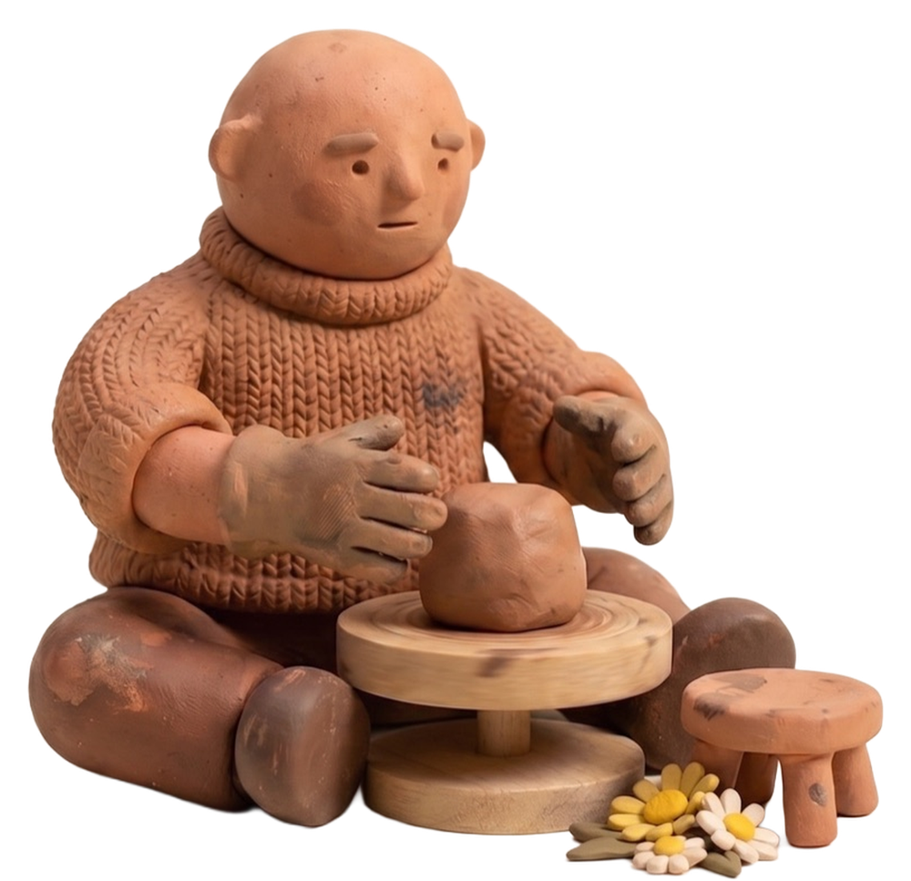
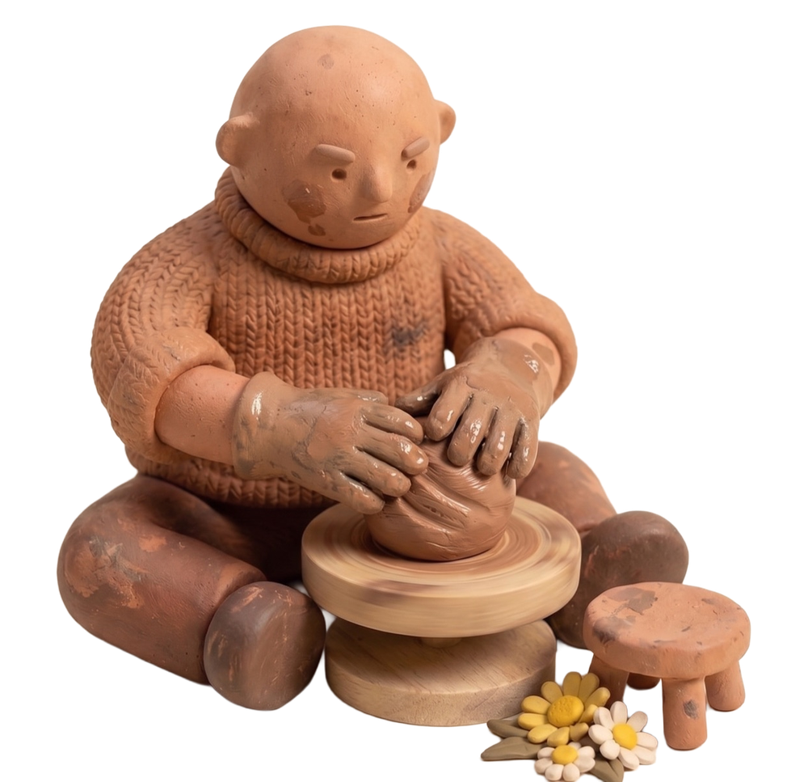
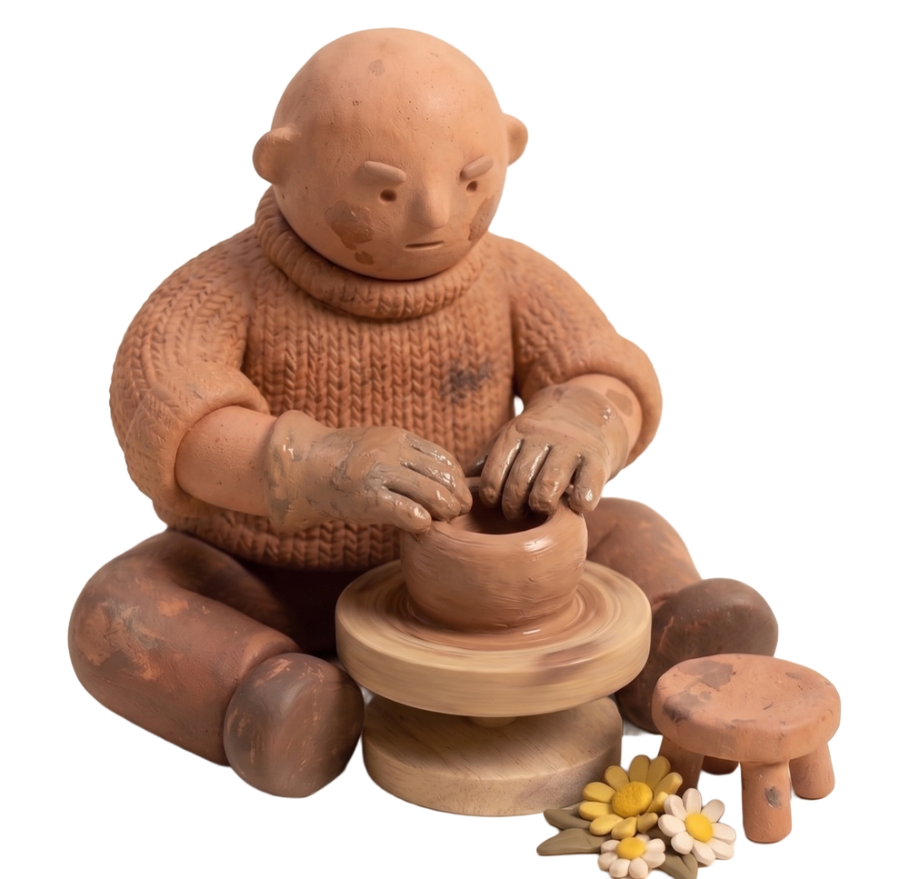
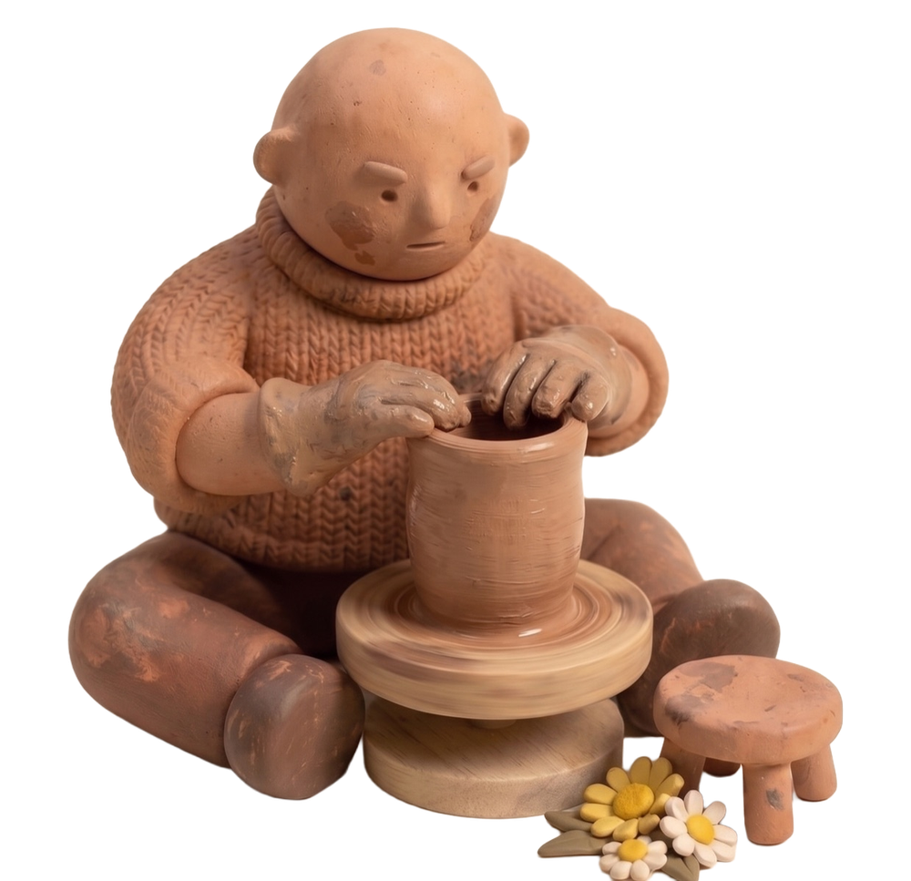
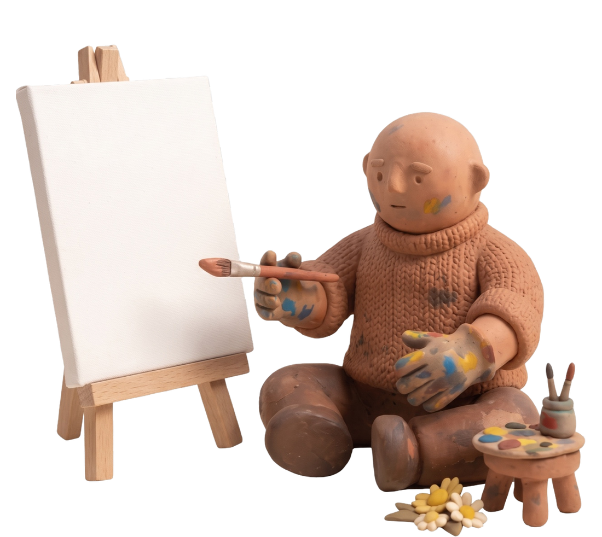
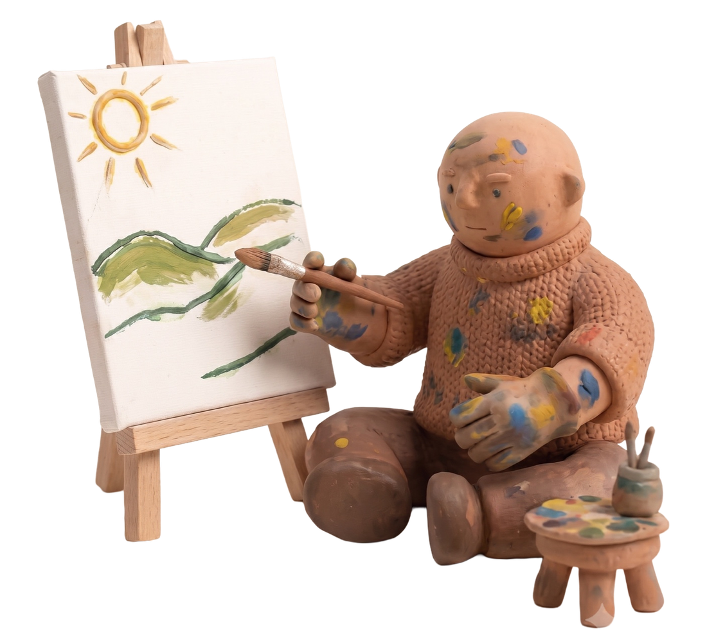
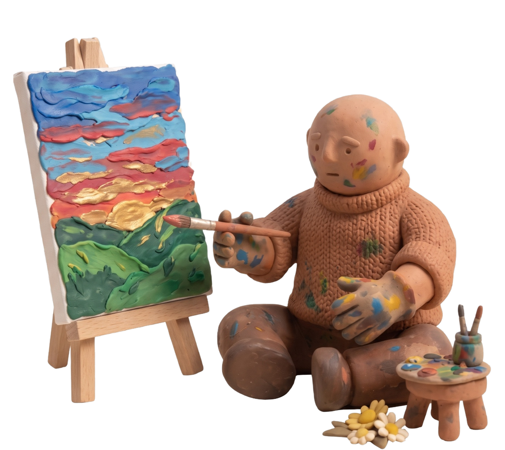
Painting is the same.
The smell of acrylic. The scratch of charcoal.
Stepping back every few minutes. Seeing if the composition still works.
These aren't inefficiencies. They're the experience.
Even digital design
used to have some of this.
Finding delight in the tiny things, the moments a user never names,
but always feels.
Most never notice these small moments. But they feel them. The designer always did.
Then the tools got faster than the feeling.
Today, creation increasingly starts with a prompt.
We've compressed hours of exploration into seconds of generation.
Optimized awaywandering.
Optimized awaymistakes.
Optimized awaytouch.
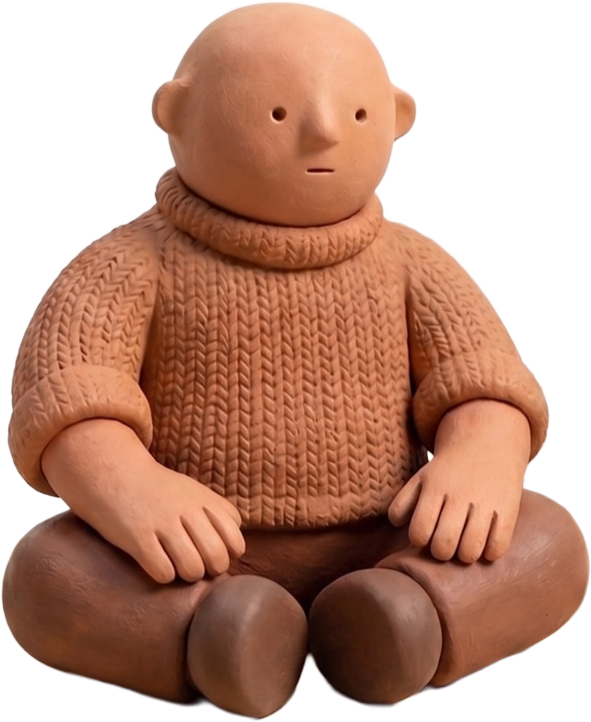
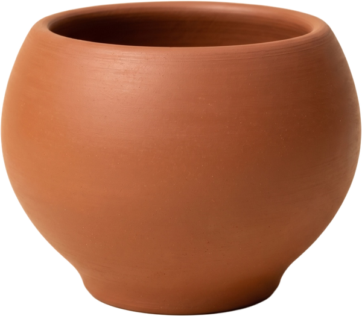
You get the bowl. Never the hours that change you.
The satisfaction never came from the result.
It comes from the dialogue between you and the material.
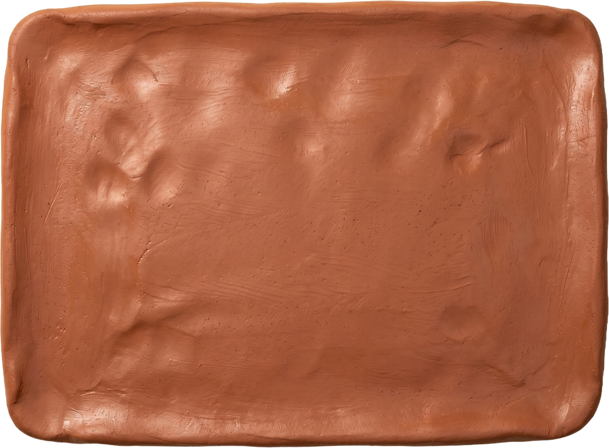
You push, and it pushes back.
The resistance.
The surprise.


The little imperfections that remind you another human was here.
AI shouldn't erase that conversation.
It should make it richer.
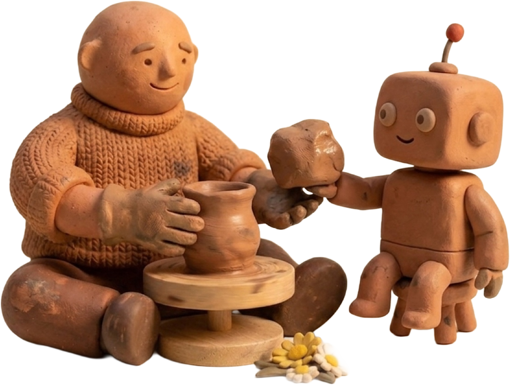
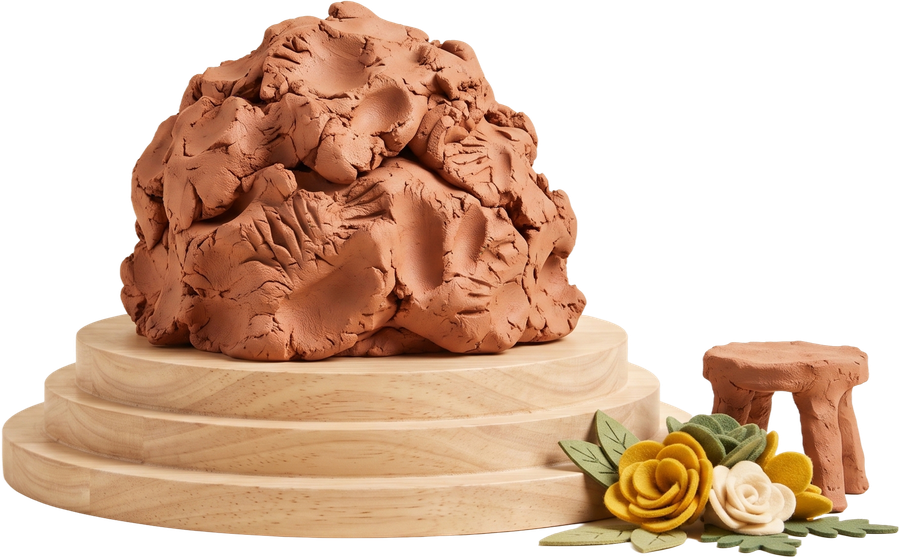
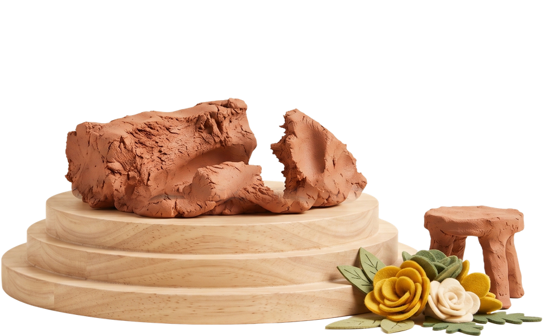
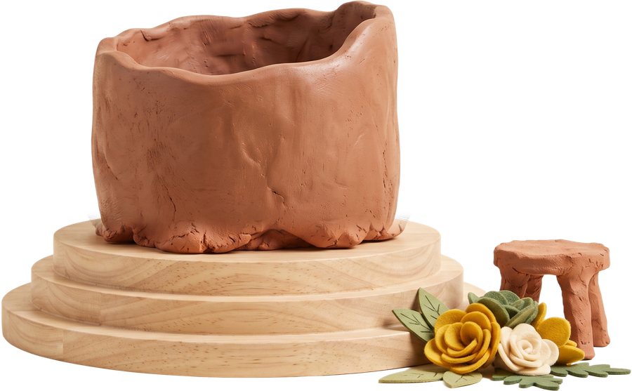
More clay.
Not more finished pots.
Maybe the future isn't one where we generate everything.
Maybe it's one where AI gives us better materials to play with.
By Gauravi Linjara